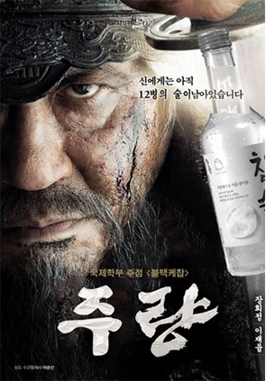

대동제 주점 : 5월 21일~5월 22일
|  |
영화 명량을 패러디한 포스터다. '명량'과 '주량'의 절묘한 언어유희에서 위화감이 전혀 느껴지지 않는다. 이순신 장군의 명대사 "신에게는 아직 12척의 배가 남아있습니다." 또한 재치있게 바꾸었다. 애국심을 자극하는 주량 포스터 때문에 12병을 비우기 전까지 계산은 잠시 미뤄야 할 듯 하다. |
|
감성 음악 영화 '비긴어게인'을 패러디한 포스터다. 감미로운 기타 대신 맥주캔을 손에 든 모습이 어쩐지 낯설지 않다. 가볍게 맥주 한잔 하고 가기 좋아 보이는 주점 포스터이다. 한잔이 두잔되고 두잔이 소주를 부르는 우리 스타일을 딱 한마디로 정의한다. "다시 시작하는 술판, 비어 어게인" |
|
예능 방송 진짜사나이에서 외국인 헨리가 했던 유행어를 재활용한 포스터이다. 정성껏 모시는 것도 아니고 안 오면 목을 잘라버린다니 조금은 무섭다. '손님은 왕' 이라는 말은 전혀 통하지 않을 것 같다. 어찌보면 사회비판적인 느낌이 들기도 한다. 사실 손님이나 직원이나 같은 인격체인데 '손님은 왕'이라는 말을 악용해 횡포를 부리는 진상이 어디 한둘인가? 한낱 포스터에도 이런 깊은 뜻을 담다니, 사회학과 다운 포스터이다. |
|
원작은 영국인 삽화가 마르틴 핸드포드가 만든 어린이 서적 시리즈이다. 1987년도에 처음 발간되어 90년대에 전세계적으로 선풍적인 인기를 끌었다. 20세기 추억의 시리즈에 나올 법한 윌리를 들고나온 걸로 미루어 보아 MIS회장은 적어도 80년대생이란 것을 알 수 있다. |
|
배우 류승룡이 찍은 배달의 민족 광고를 패러디했다. "다이어트는 포샵으로", "오늘 먹을 치킨을 내일로 미루지말자" 등 원작 광고가 이미 4차원이라서 전혀 어색하지 않다는 것이 함정이다. 참고로 배달의 미족으로 대박을 터뜨린 우아한 형제들의 김봉진 대표는 국민대학교 동문이다. |
| 공대 오빠들은 화려한 건 싫어하신다. 단순하고 직관적인 걸 좋아하는 공대 오빠들답게 매우 직설적인 포스터들이다. 감히 임시완, 강동원과 나란히하는 그 미친 당당함에 반할 것만 같은 포스터, 정말 쌀 것 같은 포스터, 물론 가격말이다. 그리고 마녀사냥에서 모음 하나 바꾸었을 분인데 흑심이 들켜버린 포스터. |
|
소속의 성격과 한자를 교모히 합성한 RCY(위)와 교육학과(아래)의 주점 포스터이다.
RCY의 주요 활동 중 하나인 헌혈을 한자의 음을 빌려 재치있게 표현 했다. 교육학과는 ㅈ과 酒(술 주)를 합성해 '줌' 처럼 보이게 만들었다. (술)가르쳐줌. 교육학과에서 술을 가르쳐준다니 이래도 되나 싶지만 왠지 믿을만 하다. |
|
비어 펍. 비어바. 봉X비어. 세상에 '비어'단어가 들어가는 가게는 많다.
하지만 '비어'라는 말이 가장 유혹적인 순간은 아무래도 '집'과 합쳐졌을 때 같다.
도발적인 마릴린 먼로의 치마가 포스터를 더 아찔하게 만들어준다. '라면 먹고 갈래?' 보다 멋진 말.
"오빠, 우리집 비어" |
|
포돌이가 수갑들고 지켜보는 산림과학대 주점 포스터이다. 포돌이까지 내세웠는데 설마 이 주점에서 만큼은 합석이 없지 않았을까? 이 곳은 술 마시고 자기절제가 힘든 사람을 위한 주점이었으리라 믿는다. 남자친구 혹은 여자친구 모래 주점 온 사람들 철컹철컹. 포스터 구경하다가 6,8번에서 갑자기 심박수 상승한 당신도 철컹철컹. |
| 옛 말씀에, '고전 시가는 시대를 반영하고 주점 포스터는 트렌드를 반영한다.'고 했다. 가장 인기있는 프로그램이었던 쇼미더머니를 패러디한 주점 포스터를 많이 볼 수 있었다. |
|
미술학부의 Witch Hunter 포스터다. 단순한 듯 하지만 자세히 보면 검은색 마녀가 있고, 그 옆에 흰색의 마녀가 또 있다. 마치 에드가 루빈의 꽃병을 연상케 한다. |
|
세트메뉴 주문시 "○○○ 주세요~"로 주문하면 어마무시한 서비스를 준다는 메뉴판이다. 얼마전에 엔X리너스에서 천사 말투로 주문하면 50% 할인해주는 이벤트와 비슷하다. 하지만 국민대 주점이 일주일 더 빨랐다는 사실! |